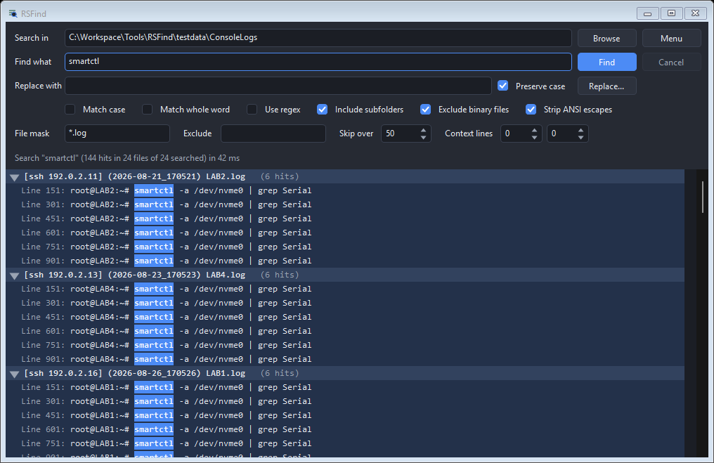

RSFind
Searches the text
inside
the files
in a folder, on demand.
No index, no service, nothing left running
Reads .xlsx and .docx without Office installed
Replace only behind a preview you have read
